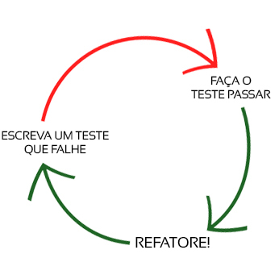

Testes na linguagem GO
Como fazer TDD em GOLANG!
Gophers em ação, no combate aos problemas!
Esse texto foi primeiro publicado na Revista /dev/all.
Inspiração
Tudo começou com o projeto Test Driven Learning, no qual me propus a escrever código básico em linguagens nas quais estava me aventurando, mas numa abordagem TDD, ou dito de maneira bem apressada, escrever primeiro o teste, e depois a solução.
TDD?
Significa, em português, “Teste depois de Deploiar” 🙂
Não, pelo contrário, significa que os testes são escritos antes de implementar uma solução. E não todos os testes, deve-se ir com calma. Não é o foco desse texto explicar o que é TDD, mas do que se está falando?
Ao atacar um problema, deve-se primeiro escrever um teste, vê-lo falhar (ainda não há solução!), e então escrever o código mais simples que o faça passar. Passou? Melhore o código e vá atacando o problema aos poucos, seguindo o ciclo. Nesse texto tem uma boa explicação, e essa imagem mostra muito bem a ideia:

Ciclo de desenvolvimento TDD.
Um bom livro
Um livro muito bom, mas nem sempre é o caso de traduções brasileiras, A Linguagem de Programação GO, de Alan Donovan e Brian Kernighan, ficou excelente, especialmente graças ao trabalho do conhecido, especialmente no mundo Python, Luciano Ramalho, que atuou como revisor técnico.
O texto é bem escrito, e tem uma pegada prática, mas sem ser um grande e chato tutorial. Dentre os bons momentos de sua leitura, está o capítulo dedicado a testes. Expressão clichê, mas é uma “leitura obrigatória”, independente de se programar em GO ou não.
A linguagem Go é fortemente opinada. Por exemplo, muitas coisas que costumam dar brigas, como tabs ou espaços, quantidade deles, se abre chave na mesma linha, entre outras discussões, são resolvidas pelo formatador de código da linguagem GO. Escreva o código, rode o comando go fmt e aceite o resultado!
E com os testes, mesma coisa, basta seguir algumas convenções muito simples, e temos nossa suíte de testes pronta para ser executada.
O capítulo dedicado a testes é bem mais completo, e cobre também benchmarchs, verificação de cobertura de teste, mocks e outras coisinhas.
Show me the code!
Antes de mostrar código, aqui vai o problema proposto: uma função que, dado um parâmetro do tipo bool, retorne a sua negação.
Um teste em GO, deve seguir algumas convenções:
- Estar em um arquivo
xxxxx_test.go. - Importar o package testing.
- Nomear as funções de teste com o prefixo
Test, por exemploTestMyFunction. - Fazer as funções de teste receberem um parâmetro, nomeado por convenção apenas coma letra
t. (t *testing.T).
Vamos ao primeiro teste (este arquivo pode ser salvo como devall_test.go):
package main
import "testing"
func TestNegue(t *testing.T) {
if got := Negation(true); got != false {
t.Errorf("Negation(true) = true, expected: false")
}
}
Para executar os testes, chame go test. Como esperado, um erro pois ainda não definimos nossa função a ser testada:
➤ go test
# _/home/paulohrpinheiro/Dropbox/devall
./devall_test.go:6:12: undefined: Negation
FAIL _/home/paulohrpinheiro/Dropbox/devall [build failed]
Vamos criar nossa nada complexa função (por exemplo, no arquivo devall.go):
package main
func Negation(v bool) bool {
return !v
}
Rodando os testes:
➤ go test
PASS
ok _/home/paulohrpinheiro/Dropbox/devall 0.002s
Mas é uma boa prática, na comunidade GO, “juntar” os testes e executá-los em um loop, uma forma de organizar chamada de “table-driven”:
package main
import "testing"
func TestNegation(t *testing.T) {
var tests = []struct {
input bool
want bool
}{
{true, false},
{false, true},
}
for _, test := range tests {
if got := Negation(test.input); got != test.want {
t.Errorf("Negation(%t) = %t", test.input, got)
}
}
}
Juntou-se todos os testes para a função em um array de estrutura contendo dois campos: input e want. Em input colocamos o parâmetro a ser passado, e em want o resultado esperado.
Logo abaixo, um loop for com range pra passar por cada item e executar os testes.
E ao executar os testes com a opção verbose temos:
➤ go test -v
=== RUN TestNegation
--- PASS: TestNegation (0.00s)
PASS
ok _/home/paulohrpinheiro/Dropbox/devall 0.002s
Digamos que nossa função estive com um comportamento errado, teríamos uma saída assim:
➤ go test -v
=== RUN TestNegation
--- FAIL: TestNegation (0.00s)
tabledriven_test.go:16: Negation(false) = false
FAIL
exit status 1
FAIL _/home/paulohrpinheiro/Dropbox/devall 0.002s
Há mais (não muito mais) sobre o pacote padrão para teste em GO. Há infraestrutura para executar benchmaks,verificar a cobertura dos testes, como executá-los em paralelo, entre outras coisas.
Por hoje é isso!